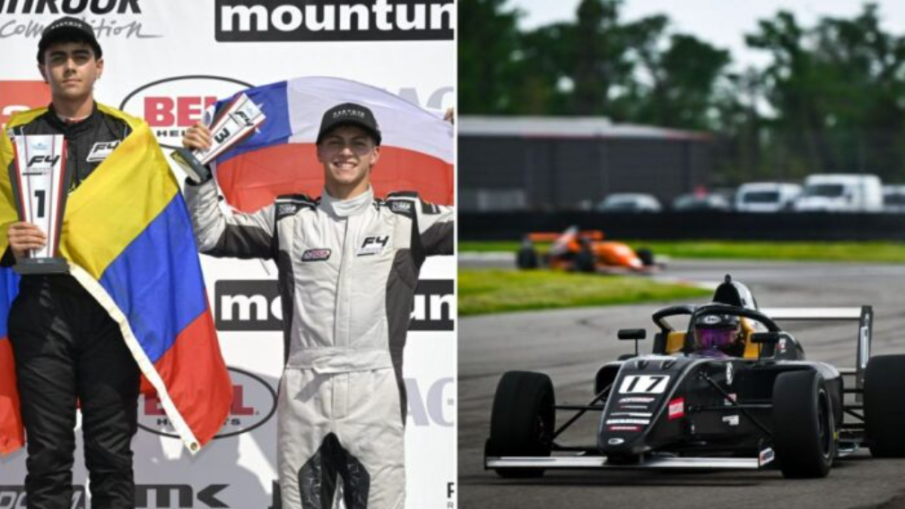

Chileno Clemente Huerta cierra con podio su debut en la Fórmula 4 de Estados Unidos
Domingo 30 marzo de 2025 | 15:40
Un cierre espectacular tuvo el piloto Clemente Huerta (Kiwi Motorsport) al terminar en la tercera ubicación en la Carrera 3 de la primera fecha del Campeonato de Fórmula 4 de Estados Unidos en una brillante participación durante el fin de semana donde sumó además dos cuartos puestos en su debut en la categoría.
Huerta largó en la tercera posición desde la grilla, gracias al tercer mejor crono conseguido en la Carrera 2 del sábado, donde fue cuarto, el mismo puesto obtenido en la Carrera 1 ese mismo día. Con la confianza de haberse puesto y conocido el auto, defendió su lugar en la partida, pero a poco andar, perdió el control del Ligier en una curva y se fue fuera de pista, quedando quinto.
El piloto siguió bregando hasta recuperar el tercer casillero a mitad de la prueba de 30 minutos en el circuito de 4.425 metros. Sin embargo, a 5’ del final, volvió al quinto puesto, pero a dos curvas de la meta, adelantó como un misil a Kekai Hauanio y Caleb Campbell para recuperar la zona de podio y terminar tercero.
Matías Soto campeón en Concepción y Jarry prepara su retorno a las canchas

Semanas de ensueño está viviendo el tenista nacional Matias Soto, quien durante esta jornada conquistó su tercer título Challenger consecutivo junto a Vasil Kirkov (134°).
En esta ocasión, fue el torneo de Concepción que vio coronarse al copiapino, tras vencer a la dupla japonesa compuesta por Takeru Yuzuki (142°) y Seita Watanabe (176°), por parciales de 62 y 64.
Matías Soto, quien venía de ser campeón en los torneos Challenger de Asunción y Santiago, también junto a Kirkov, escalará al puesto 110° de la ATP en la modalidad de dobles. Quedando de esta manera, a pocos escalones de meterse entre los 100 mejores jugadores del planeta. La semana que viene jugará el Challenger de Campinas, esta vez junto al uruguayo Ignacio Carou (207°).
Durante esta semana, el único otro tenista chileno que tuvo acción fue Tomás Barrios (149°). El chillanejo también disputó el Challenger de Concepción, pero fue eliminado en la primera ronda ante el brasileño João Lucas Reis (380°). Su próximo torneo, también será el Challenger de Campinas en Brasil, donde debuta ante el argentino Luciano Ambrogi (378°).
La primera raqueta del país, Alejandro Tabilo (31°), se tomó la semana libre. Esto, luego de quedar eliminado en el Masters 1000 de Miami ante el N°5 del planeta, Casper Ruud. La semana que viene, Tabilo dirá presente en el ATP 250 de Houston, donde quedará libre en la primera ronda, debido a su ranking.
Por su parte, Nicolas Jarry (47°) volverá a la competencia luego de una pausa posterior al Chile Open, debido a la fractura del dedo meñique de su pie izquierdo. Esta lesión le impidió jugar los Masters 1000 de Indian Wells y Miami. El retorno de Jarry será en el ATP 250 de Bucarest, en Rumania. En su debut, se medirá ante el ganador entre el duelo de Dusan Lajovic (108°) y Christopher O’Connell (78°).
Finalmente, Cristian Garin (136°), quien tuvo libre esta semana, también participará del ATP 250 de Houston. Torneo que Gago supo ganar en 2019, adjudicándose en ese entonces, su primer título a nivel ATP. En esta ocasión, debutará en primera ronda ante el suizo Alexander Ritschard (125°).
Chile se coronó campeón del Sudamericano de Remo 2025
26/03/2025
El remo nuevamente le entregó una alegría a nuestro país luego de que este miércoles, el Team Chile se coronara campeón del Sudamericano que se disputó en Asunción, Paraguay.
La delegación nacional venía de una gran primera jornada, en la cual habían ganado 8 medallas, de las cuales 6 fueron de oro.
En este segundo y último día de competencias, el Team Chile salió dispuesto a confirmar su buen nivel y sumar nuevas medallas a su palmarés.
Las medallas
El día arrancó con Tomas Muñoz y Ronald Peña quedándose con la medalla de oro en el doble par juvenil masculino, con un tiempo de 6 minutos, 36 segundos y 39 centésimas. La plata fue para Argentina y el bronce para Uruguay.
La segunda medalla del día la entregó Catalina Fierro, quien obtuvo la presea de plata en el single juvenil femenino con un registro de 8 minutos, 10 segundos y 96 centésimas. El oro quedó en manos de Argentina mientras que Paraguay se quedó con el bronce.
Christina Hostetter, por su parte, obtuvo la medalla de bronce en el single femenino, registrando una marca de 7 minutos, 57 segundos y 94 centésimas. En esta prueba, Brasil ganó el oro y Paraguay la plata.
El segundo oro del día para nuestro país fue ganado por Nahuel Reyes y Alonso Poo. Los nacionales se anotaron con un tiempo de 6 minutos, 33 segundos y 57 centésimas, superando a Uruguay y Paraguay que terminaron segundo y tercero, respectivamente.
Emili Serandour y Emilia Rosas obtuvieron el tercer oro del día para Chile al completar el recorrido en 7 minutos, 30 segundos y 80 centésimas. Argentina se llevó la plata y Paraguay el bronce.
Antonia y Melita Abraham nuevamente se subieron a lo más alto del podio tras ganar la prueba del doble par femenino con una marca de 6 minutos, 58 segundos y 97 centésimas. La medalla de plata fue para Brasil mientras que Paraguay obtuvo la presea de bronce.
Clemente Grob, Domingo Vásquez, Rafael Labatut y Benjamín Menjiba se anotaron con un nuevo oro para Chile al ganar el cuatro sin timonel masculino con un tiempo de 6 minutos, 10 segundos y 59 segundos. En el segundo lugar quedó Argentina mientras que Brasil ocupó la tercera posición.
Isidora Gonzáles, Catalina Fierro, Amanda Araneda y Trinidad Diaz ganaron otro oro al quedarse con el primer lugar en el cuádruple juvenil femenino, registrando un tiempo de 6 minutos, 49 segundos y 34 centésimas. Argentina obtuvo el segundo lugar mientras que Brasil obtuvo el bronce.
La segunda medalla de bronce del día para Chile la ganó el cuádruple masculino de Felipe Cárdenas, Francisco Lapostol, Brahim Alvayay y Alfredo Abraham, quienes registraron un tiempo de 5 minutos, 59 segundos y 51 centésimas. El triunfo fue para Uruguay mientras que Argentina se quedó con la medalla de plata.
Chile campeón
Terminadas las dos jornadas de competencias, el Team Chile celebró una gran actuación para coronarse como el campeón sudamericano.
En total, el Team Chile se quedó con 12 medallas de oro, dos medallas de plata y tres de bronce para terminar con un total de 17 preseas.
Escrito por Daniel Arellano
Foto: Federación Chilena de Remo